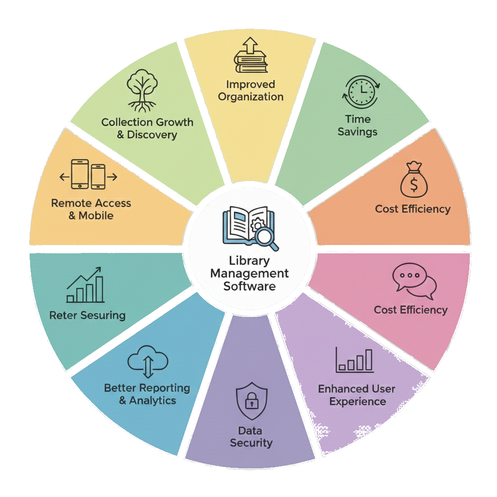

Fosbil is a comprehensive library management software designed to streamline, automate, and optimize every aspect of library operations.
Built for modern academic, institutional, and public libraries, Fosbil centralizes cataloging, circulation, acquisitions, membership management, and
reporting into one integrated platform.
The system simplifies day-to-day administrative tasks through intelligent automation.
From barcode-based issue and return tracking to real-time inventory management, Fosbil minimizes manual effort and reduces operational errors.
Its advanced cataloging module supports structured metadata management, enabling quick search and seamless resource discovery.
Fosbil enhances user engagement through an intuitive interface that allows members to search catalogs, reserve books, track borrowing history, and receive automated notifications for due dates and renewals.
The software also provides robust analytics and customizable reports, helping library administrators make data-driven decisions regarding acquisitions, resource utilization, and performance optimization.
Designed with scalability and security in mind, Fosbil adapts to libraries of varying sizes while ensuring data integrity and controlled access management.
Whether deployed in schools, colleges, corporate institutions, or public libraries, it delivers operational efficiency, transparency, and improved service quality.
Fosbil is not just a management tool — it is a complete digital ecosystem that transforms traditional libraries into smart, connected knowledge centers.
Why Choose Fosbil?
In a world driven by information, a library should be more than just a room full of books—it should be a seamless digital experience.
Fosbil (featuring the Fosbil integrated platform) bridges the gap between traditional resource management and modern technological efficiency.
📚 Advanced Cataloging & Metadata>
Stop searching and start finding. Our structured metadata management supports diverse resource types.
Multi-Media Support
Catalog books, journals, digital e-resources, and multimedia.
Quick Discovery
Advanced search filters by author, title, ISBN, or subject.
Bulk Import
Seamlessly migrate your existing records with data integrity.
🔄 Intelligent Automation & Circulation
Reduce manual errors and free up your staff for high-value tasks.
Barcode & RFID Integration: Rapid-fire issue and return tracking.
Real-Time Inventory: Always know what’s on the shelf and what’s in circulation.
Automated Notifications: Instant SMS and email alerts for due dates, renewals, and arrivals.
👥 Member-Centric Experience
Empower your readers with self-service tools that increase engagement.
Intuitive OPAC: A user-friendly Online Public Access Catalog for 24/7 resource discovery.
Personal Dashboards: Members can track borrowing history, reserve books, and manage renewals.
Fine Management: Automated calculation and tracking of overdue charges.
📊 Robust Analytics & Reporting
Make data-driven decisions to grow your collection.
Acquisition Insights: Identify which resources are in high demand.
Customizable Reports: Generate daily, monthly, or annual performance audits in one click.
Utilization Tracking: Monitor library traffic and resource turnover rates.
Why use Fosbil library management software ?

Experience the Future of Library Science
Join the hundreds of institutions worldwide that have moved beyond paper logs and legacy systems. Enhance your service quality, ensure transparency,
and provide your community with the knowledge tools they deserve.
Ready to modernize your library?
Watch our product tour video, to decide whether this is the right fit for your library or not ?
Comparative Analysis: Fosbil vs. Industry Leaders
Parameter
Fosbil (LIB-Suite)
Koha (ILS)
Follett Destiny
SirsiDynix Symphony
Primary Target
Academic & Corporate
All (Highly Versatile)
K-12 Schools
Large Public/Research
Deployment
Cloud-Native / On-Prem
On-Prem / Hosted
Cloud-Based (SaaS)
Hybrid / Enterprise
Core Strength
Integrated Ecosystem
Massive Customization
Student Engagement
Scalable Performance
Automation Level
High (Intelligent)
Moderate (Manual Setup)
High (User-Focused)
High (Workflow-Led)
Interface Design
Modern & Intuitive
Classic / Modular
Visual & Fun (Discover)
Professional / Dense
Cataloging
Structured Metadata
MARC21 / Z39.50
Educational Focused
Global Enterprise Standards
Analytics
Real-time / Data-driven
Report-heavy (SQL)
Educational Progress
Deep Business Intel
Security
Role-based / Encrypted
Community Vetted
Student Privacy (COPPA)
Bank-Grade Security
Implementation
Rapid / Low Manual Effort
Slow (Technical Setup)
Standardized
Complex / Professional
Final Verdict
BUY NOW
BUY FOR YOUR RIVAL
BUY FOR YOUR RELATIVE
BUY FOR YOUR NEMESIS
The comparison is based on 2025 data
Testimonials
Hear from our customers what they have to say about our product and service